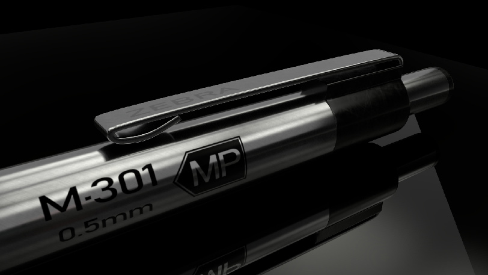
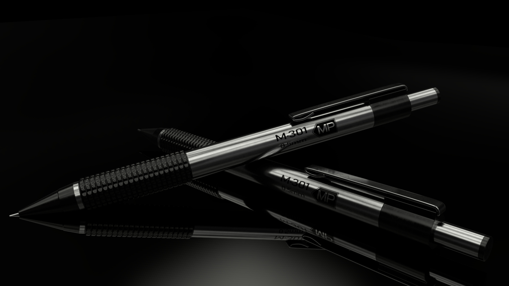
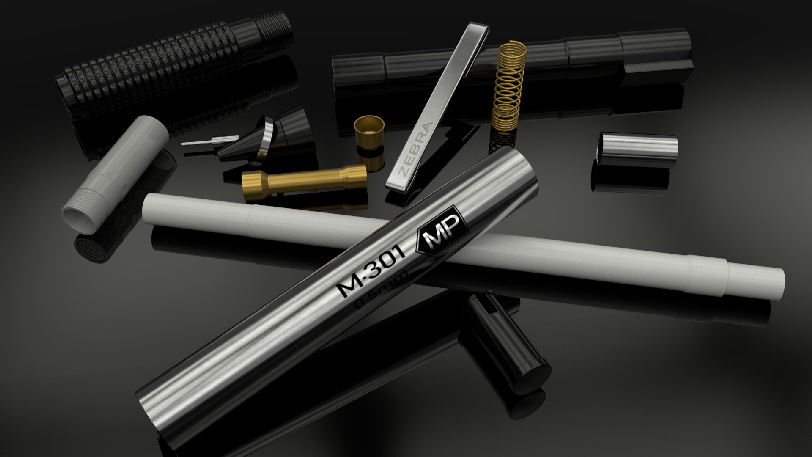

2019


This is a model based on a mechanical pencil made by Zbra, the mode is made to scale and smoothed
  The model also includes all the inner parts and all the connection mechanism. Made to the finest detail.
Including grey model, textured model, and wire-frames